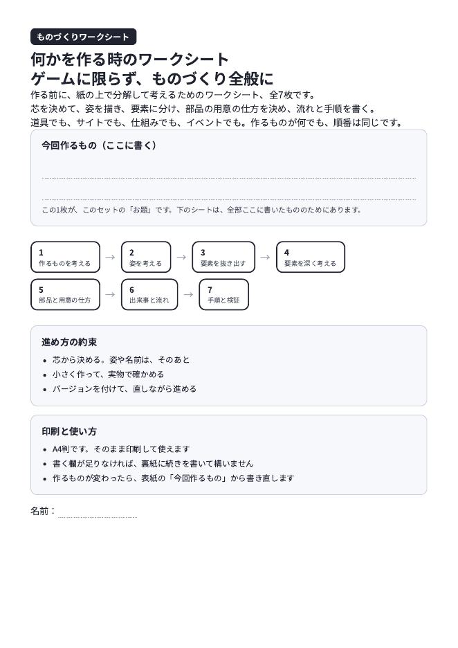
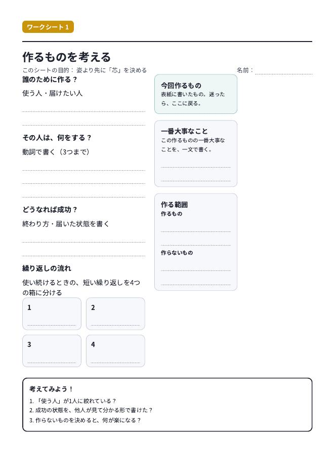
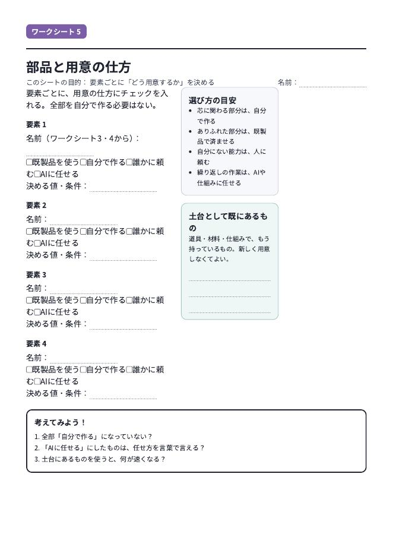

ゲームに限らず、何かを作る時のためのワークシートです。作る前に、紙の上で分解して考える。道具でも、サイトでも、仕組みでも、イベントでも、作るものが何でも順番は同じです。
PDFをダウンロード（全8ページ）A4判・印刷用。表紙の「今回作るもの」欄に、作るものを書くところから始まります。



利用と印刷は自由です。改変も構いません。
使ってみた感想や、「ここはこう直した」という話を教えていただけるとうれしいです。詳しくは紹介記事をご覧ください。
ゲーム制作向けの版は、Unityワークシートの資料ページにあります（UE版・three.js版のPDFも配布中）。